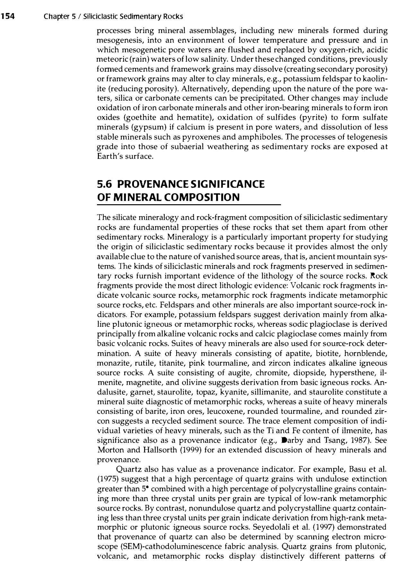

In sedimentary geology and paleoclimatology (Boggs, 2014, pp. 168–172; Walker, 1967; Pettijohn, 1975), red beds are defined as thick, extensive sequences of continental (terrestrial) siliciclastic sedimentary rocks—predominantly sandstones, siltstones, mudrocks, and conglomerates—that possess a conspicuous, uniform red, reddish-brown, brick-red, or maroon coloration.
This coloration is produced by microscopic coatings and grain-rimming films of authigenic ferric iron oxide (principally hematite, $\alpha\text{-Fe}_2\text{O}_3$) enclosing detrital quartz and feldspar grains or dispersed throughout the fine argillaceous matrix. In the global stratigraphic record (e.g., the Devonian Old Red Sandstone, Permian-Triassic New Red Sandstone, and the Gondwana continental beds), red beds are canonically diagnostic of arid to semi-arid, highly oxidizing continental climatic conditions.

Historically, Paul D. Krynine (1949) argued that red beds represented detrital lateritic soil washed from tropical uplands into rapidly sinking basins. However, monumental field and petrographic work by T.R. Walker (1967, 1976) on modern desert basins (such as the Sonoran Desert and Baja California) conclusively established that:
Incorrect: In sedimentary petrology, an ironstone is defined strictly as a sedimentary rock containing greater than $15\text{ wt}\%\text{ iron}$ (e.g., oolitic ironstones like the Minette ore of Lorraine or chamosite/siderite ironstones). Ironstones are predominantly shallow marine or brackish-lagoonal deposits formed in warm, humid, tropical or sub-tropical waters where intense chemical weathering on adjacent landmasses leaches iron and delivers it via rivers into restricted coastal basins. They are not characteristic of arid climatic conditions.
Correct: By universal geological definition (Boggs, 2014, p. 168; Pettijohn, 1975; Walker, 1967), red beds are the quintessential sedimentary rock suites formed in arid to semi-arid continental climatic regimes. The combination of intense oxidizing conditions, lack of vegetative organic matter, eolian sand transport, ephemeral playa drainage, and intrastratal hematite pigmentation uniquely defines red-bed deposition in desert basins.
Incorrect: A cherty sandstone is a sandstone cemented by microcrystalline quartz/chalcedony (chert) or containing abundant detrital chert pebbles. Chert cementation and chert pebble deposition occur in a wide variety of temperate, marine, and fluvial environments and have no unique or defining genetic association with arid climates.
Incorrect: Because neither ironstones (which are marine/humid) nor cherty sandstones are genetically defined by or restricted to arid climates, option (D) is completely untenable. The official and scientific correct answer is exclusively (B) Red beds.
| Sedimentary Rock Type | Total Iron Content ($\text{Fe}$) | Dominant Iron Mineralogy | Primary Depositional Environment | Diagnostic Paleoclimatic Regime |
|---|---|---|---|---|
| Red Beds | Low ($0.5\text{ to } 3.0\text{ wt}\%$) | Authigenic pigmentary Hematite ($\alpha\text{-Fe}_2\text{O}_3$) | Continental: Alluvial fans, braided rivers, eolian dunes, playa mudflats | Arid to semi-arid, highly oxidizing, low rainfall |
| Ironstone (Phanerozoic) | Very High ($> 15.0\text{ wt}\%$) | Chamosite (Fe-chlorite), Siderite ($\text{FeCO}_3$), Goethite, Berthierine | Shallow marine shelves, estuaries, restricted lagoons | Warm, humid tropical/subtropical with intense terrestrial leaching |
| Banded Iron Formation (BIF) | Very High ($20\text{ to } 40\text{ wt}\%$) | Alternating bands of Magnetite ($\text{Fe}_3\text{O}_4$) / Hematite and microcrystalline chert | Precambrian deep marine basins and continental shelves | Anoxic Archean/Paleoproterozoic oceans before the Great Oxidation Event |
| Bog Iron Ore | Moderate to High ($10\text{ to } 25\text{ wt}\%$) | Limonite, Goethite, bacterial iron oxyhydroxides | Freshwater peat swamps, bogs, and marshes | Cool-temperate, humid, waterlogged reducing-to-oxidizing interface |
A thick succession of brick-red sandstones displays large-scale trough cross-bedding with foreset dips up to $34^\circ$, frosted quartz grains, and interbedded desiccation-cracked mudstones with nodular gypsum. Name the rock suite, identify the depositional environment, and specify the paleoclimate.
Solution: The succession represents a continental red bed suite. The high foreset dips ($34^\circ$, matching the angle of repose of dry sand), frosted quartz grains (aeolian impact pitting), desiccation mudcracks, and nodular gypsum indicate an eolian desert dune and ephemeral playa lake system formed under an arid to hyper-arid continental paleoclimate.
Why does a sediment require only $1\%$ hematite to become vivid brick-red, whereas a rock containing $10\%$ magnetite or siderite remains dull grey or green?
Solution: Hematite ($\alpha\text{-Fe}_2\text{O}_3$) in red beds occurs as ultra-fine, sub-micron colloidal particles ($< 0.1\mu\text{m}$) with an exceptionally high specific surface area, forming continuous thin optical pigment films coating thousands of translucent quartz grains. Its intense intrinsic absorption band in the blue-green spectrum and strong reflectance in the red spectrum produces maximum visual pigmentation. In contrast, magnetite and siderite occur as discrete, coarser crystals that do not form dispersive surface pigment rinds, keeping the rock grey or brownish-green.
Contrast T.R. Walker's intrastratal alteration model with P.D. Krynine's laterite model for the origin of red beds.
Solution: - Krynine's Model (Detrital/Laterite): Posited that the red hematite was formed in upland tropical lateritic soils under warm, humid climates and washed mechanically into adjacent sinking basins as detrital red muds. - Walker's Model (Diagenetic/In-Situ): Demonstrated that modern desert sands are deposited drab and unpigmented. In arid basins, oxidizing, alkaline groundwater decomposes detrital ferromagnesian minerals (hornblende, biotite) in-situ during post-depositional diagenesis, precipitating iron oxyhydroxides that dehydrate over geological time into pigmentary hematite. Walker's diagenetic model is now the accepted paradigm for most ancient arid red beds.
Why are red beds virtually absent in the Archean and early Paleoproterozoic geological record prior to $\sim 2.4\text{ Ga}$?
Solution: Formation of hematite ($\text{Fe}^{3+}$) requires atmospheric oxygen. Prior to the Great Oxidation Event (GOE) at $\sim 2.4\text{--}2.2\text{ Ga}$, Earth's atmosphere was anoxic ($P_{\text{O}_2} < 10^{-5}\text{ PAL}$). Under anoxic conditions, iron weathered from minerals remained in the soluble ferrous state ($\text{Fe}^{2+}$) and was washed into the oceans, preventing subaerial hematite pigmentation. The sudden appearance of continental red beds at $\sim 2.2\text{ Ga}$ serves as a primary geological benchmark for atmospheric oxygenation.
Explain the origin of green reduction spots (haloes) frequently observed in brick-red sandstones and shales.
Solution: Green reduction spots (often containing a tiny dark center) form during burial diagenesis where a localized speck of organic matter (e.g., plant spore, fragment of organic carbon) or a detrital radioactive mineral (uraninite) is embedded in the red sediment. The organic carbon provides a reducing micro-environment where anaerobic microbes reduce ferric iron back to soluble ferrous iron ($\text{Fe}^{3+} \rightarrow \text{Fe}^{2+}$), dissolving the red hematite coating and leaving the green color of ferrous silicate clays (chlorite, illite).
What is "caliche" or "calcrete" and why is it a diagnostic paleoclimatic associate of sedimentary red beds?
Solution: Caliche (calcrete) is an authigenic pedogenic accumulation of calcium carbonate ($\text{CaCO}_3$) forming nodules, hardpans, or laminar crusts in the upper soil profile. It forms exclusively in arid to semi-arid climates (annual precipitation between $100\text{ and } 500\text{ mm}$) where seasonal rainfall dissolves surface carbonates, which are then drawn upward by intense solar evaporation and capillary action, precipitating in the vadose B-horizon. Its presence in red-bed sequences definitively confirms an arid paleoclimate.
What is the difference between an "arkose" and an "orthoquartzite" in red bed basins, and what does the preservation of fresh feldspar signify about the climate?
Solution: An arkose contains $> 25\%$ feldspar, whereas an orthoquartzite contains $> 95\%$ quartz. In red bed basins, arkosic sandstones are extremely common (e.g., New Red Sandstone) because the arid climate lacks moisture to drive chemical hydrolysis ($2\text{KAlSi}_3\text{O}_8 + 2\text{H}^+ + 9\text{H}_2\text{O} \rightarrow \text{Al}_2\text{Si}_2\text{O}_5(\text{OH})_4 + \dots$). Consequently, chemically unstable detrital feldspars survive mechanical breakdown and are preserved fresh and unweathered in the sediment, directly confirming aridity.
In paleomagnetism, why are red beds extensively sampled for magnetic polarity and continental drift reconstructions?
Solution: The fine pigmentary and specular hematite in red beds carries an exceptionally stable chemical remanent magnetization (CRM) and detrital remanent magnetization (DRM). Hematite has a very high Curie temperature ($T_c = 675^\circ\text{C}$) and extraordinarily high magnetic coercivity ($> 1\text{--}5\text{ Tesla}$), making it virtually immune to secondary viscous magnetic overprinting and preserving pristine paleomagnetic pole positions from deep geological time.